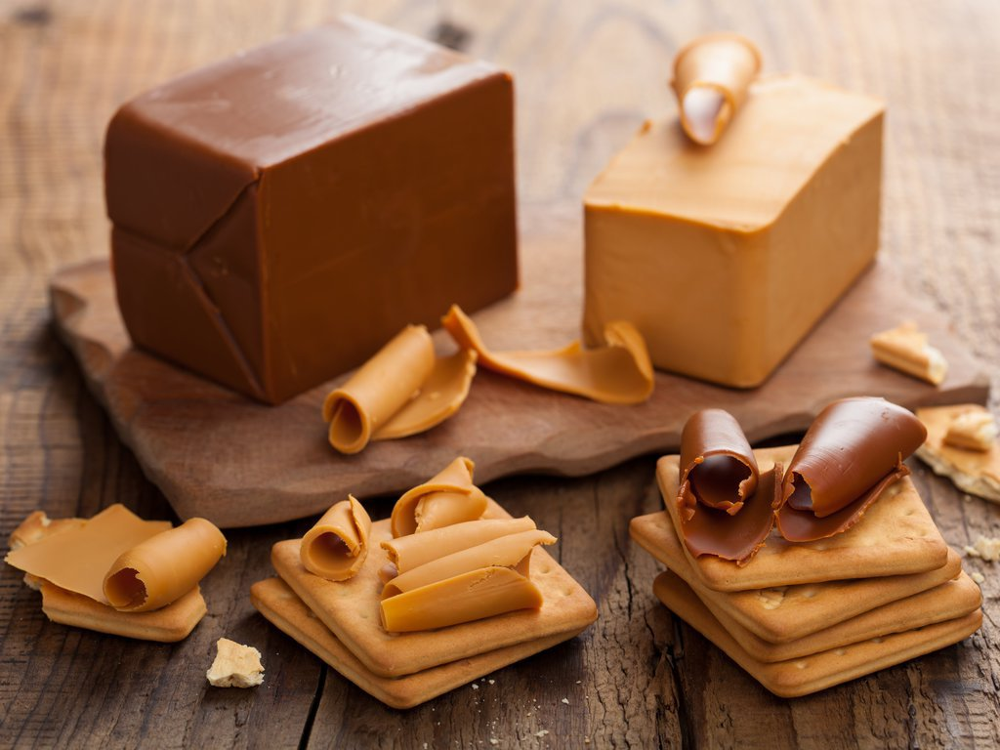
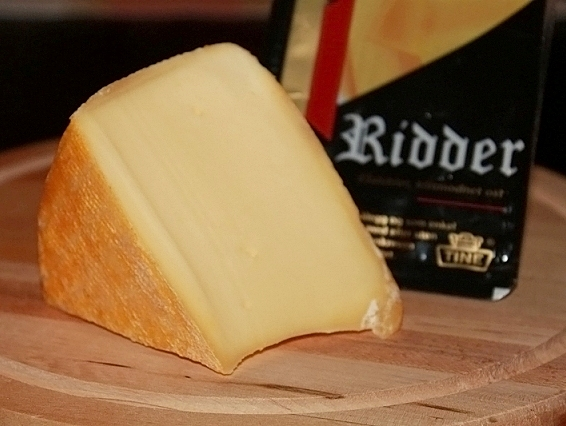
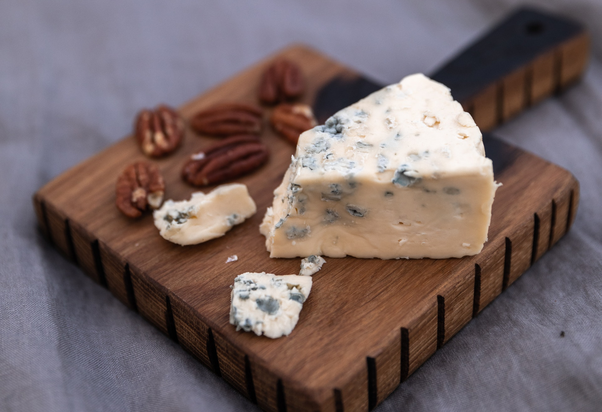
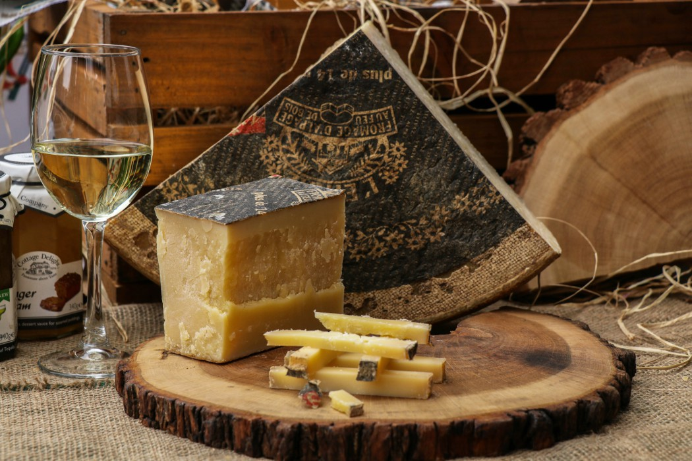
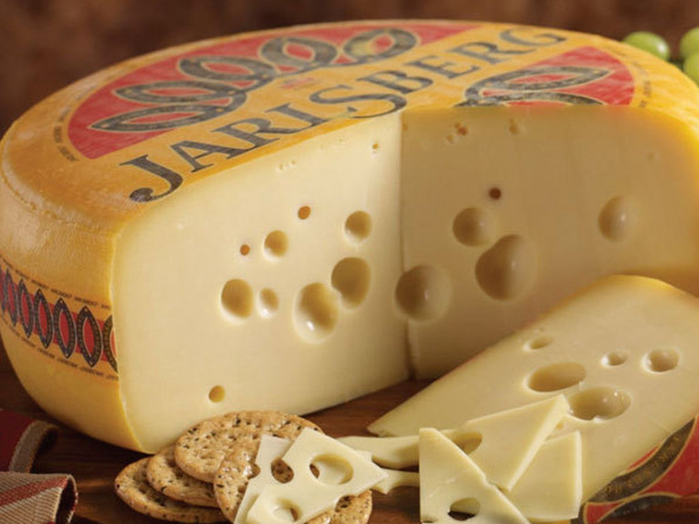
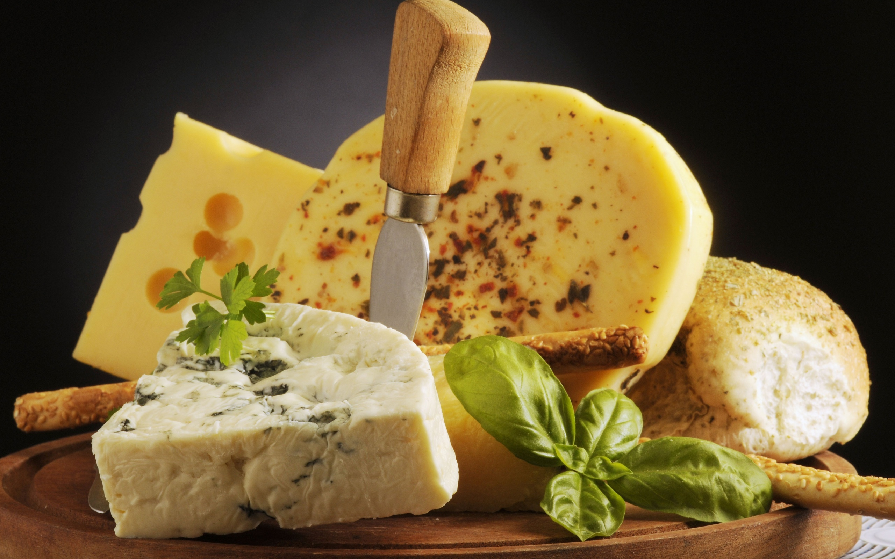

Ассортимент

Брюнуст
Вес: 450 г
Брюност - это группа скандинавских сыров, которые делаются из сыворотки путем ее продолжительного уваривания.
В процессе уваривания содержащийся в сыворотке сахар (лактоза) карамелизуется, а масса становится густой и затвердевает при охлаждении.
620 ₽

Риддер
Вес: 570 г
Риддер — норвежский полутвёрдый сыр без глазков, желтовато-серого цвета, характеризуется ароматным, пикантным вкусом, достаточно острый.
850 ₽

Гамалуст
Вес: 900 г
Традиционный норвежский острый полутвёрдый сыр с плесенью. Гамалуст издавна производится в Норвегии и, как и многие традиционные блюда норвежской кухни, в том числе лепёшка.
1050 ₽

Флётемюсуст
Вес: 700 г
Сыр из сыворотки и сливок, один из видов брюнуста, норвежского коричневого сыра. Имеет мягкий вкус.
Изготавливается из коровьего молока.
1700 ₽

Ярлсберг
Вес: 1500 г
Ярлсберг имеет корочку из жёлтого воска и однородного жёлтого цвета на срез. Имеет мягкий, сливочный, пряный, сладковатый вкус. Этот сыр хорош и в приготовлении блюд, и в качестве снэка.
3800 ₽

Ассорти
Вес: 5000 г
Сорт норвежского сливочного сыра. Изготавливается из 80 % козьего молока и 20 % коровьих сливок.
8600 ₽